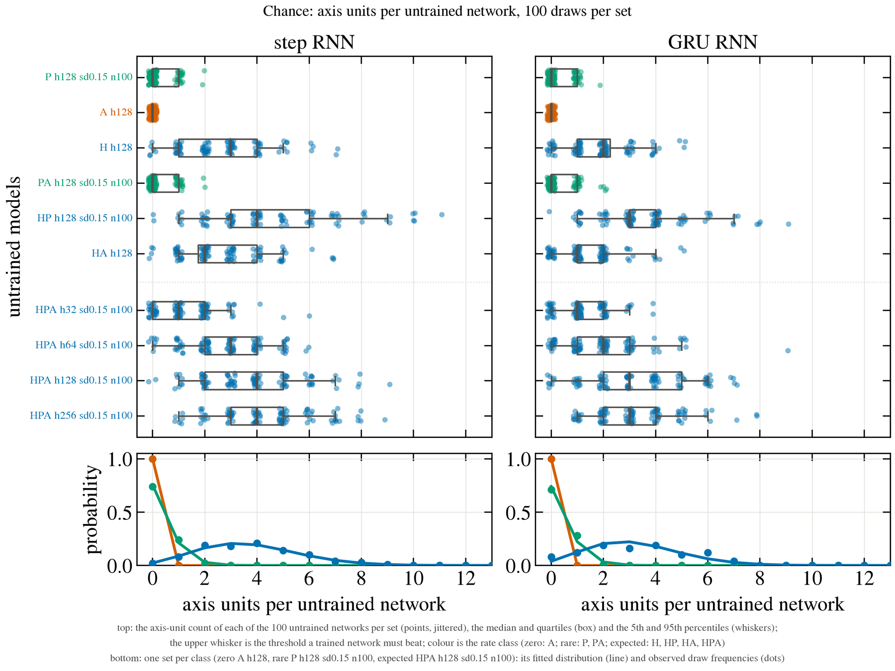
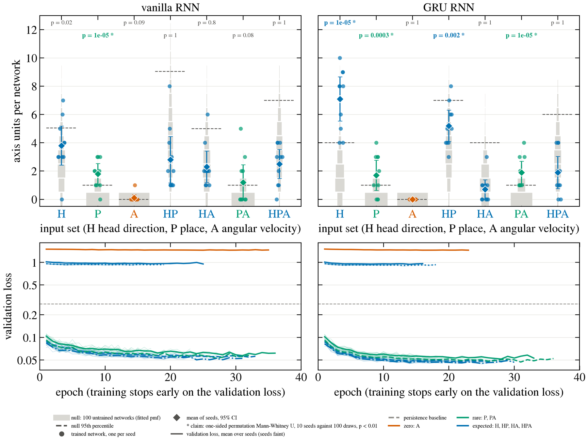
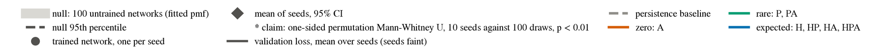

In thirty seconds
Olson and Nitz found subicular cells tuned to the axis of travel: two opposite peaks, no place field, tuning that vanishes in an open arena. We asked whether such units emerge in recurrent networks trained to predict a rat's position from its own trajectories. Head-direction input alone yields many axis-shaped units, but they are head-direction cells in disguise: sharp in the arena and room-anchored under rotation. Place input yields a few that behave like the recorded cells. The full model sits at chance. Next: a hex maze, where the geometry separates the two.
The question
The subiculum is a primary output of the hippocampal formation. Olson et al. (2017) recorded neurons there that fire when a rat travels along one axis of a triple-T track in either direction, 180° apart, at any place along the corridor, and that lose this tuning when the animal forages in an open arena. They called them axis-tuned cells and distinguished them from head-direction cells by that arena test.
Can this code emerge in a latent-variable model trained only to predict the animal's position? If it does, which inputs carry it, and does the model's version pass the same tests the recorded cells passed: no tuning in the arena, and anchoring to the room when the track is turned?
The method
81 sessions from three rats on the triple-T track and in a circular arena, cleaned into 20 Hz blocks and split by day into training, validation and test. Networks of 128 hidden units, a step RNN and a GRU, predict the position one second ahead from half a second of input: populations of head-direction cells (H), place cells (P) and angular-velocity cells (A), alone and in every combination, ten seeds each.
Every hidden unit is scored by the paper's criterion as ported: two opposite peaks in the tuning by travel direction, firing along the length of each corridor, and no axis shape in the arena. Each set of ten trained networks is compared with 100 untrained networks of the same architecture and inputs by a one-sided Mann-Whitney test with a permutation p (claim at p < 0.01), because untrained networks already contain units that pass.
Chance first: untrained networks already contain axis units
For each input set and architecture, 100 untrained networks run on the same test sessions and scored by the same rules. The box is the median and quartiles, the whiskers the 5th and 95th percentiles; the upper whisker is the threshold a trained network must beat. Colour is the chance class: zero with angular velocity alone (vermilion), rare with place input and no head direction (green), a few per network whenever head-direction cells are an input (blue). Below, one fitted count distribution per class.

The six results
Every number below was recomputed from the experiments' tables by a certification notebook; open "the numbers" under a result to see each statement and its recomputed value.


Six units that pass the criterion, chosen to span the range
Each block: the unit's activity along one test session's path on the track, on the same track turned 90° clockwise, and in the arena, one colour scale per unit. Below: tuning by travel direction on the track (blue) over heading in the arena (grey); the turned track's tuning (purple) over the original (blue), both in room coordinates; and the two curves. Gold marks the fitted peaks, purple the peaks refitted after the turn, the grey circle the unit's maximum across the three conditions.
The place-only unit (second tab) is sharper in the arena than most of its population; result 5 is about the population medians, where place-input units broaden.
Discussion
The task and the track may both be too easy
Position prediction on fixed routes is nearly solved by place cells alone: adding head direction or angular velocity neither improved the fit nor raised the count of axis units above what head-direction input already gives an untrained network. The triple-T has corridors at only two orientations, so any heading-tuned unit folds into a pair of opposite peaks and passes the shape rule by geometry. A hex maze would separate the accounts: corridors run at three orientations 60° apart, so a unit inheriting head-direction tuning should fire on the two or three corridor directions inside its tuning width, while a genuine axis code should keep two peaks 180° apart at one of the three orientations.
What the arena criterion could ask
Olson et al. defined their axis-tuned cells by a set of criteria and also reported properties that were not part of the definition. Our units satisfy every criterion, but not every property: the recorded cells lose tuning strength off the track, while units driven by head-direction input gain it and are sharper in the arena than on the track. Whether such properties belong in the criterion is open. Whether a lower arena ratio should be required, or the absence of bimodality is enough, is a question about what an axis cell is, not a statistical one, and the hex maze and the arena together would answer it better than a threshold.
Other learning rules
Local, unsupervised rules such as Hebbian and Oja learning, and other paradigms such as reinforcement learning, are the natural next step, because the rule that forms the code may itself be the explanation of why the code is axial rather than directional.
Read more
- The three-minute walk · what I say at the poster, with a thirty-second version
- The presentation brief · everything behind the poster, from the biology to why a permutation Mann-Whitney test
- All six example units on one sheet
- Code, experiments and notebooks · the recordings themselves are not public

References
- Olson JM, Tongprasearth K, Nitz DA (2017). Subiculum neurons map the current axis of travel. Nature Neuroscience 20.
- Bicanski A, Burgess N (2018). A neural-level model of spatial memory and imagery. eLife 7:e33752.
- Bicanski A (2026). A vector navigation and inference architecture can construct universal cognitive maps for abstract reasoning. Current Biology 36:5223–5239.e6.
- Duszkiewicz AJ, Peyrache A et al. (2024). Local origin of excitatory–inhibitory tuning equivalence in a cortical network. Nature Neuroscience 27:782–792.
- Spalla D, Treves A, Boccara CN (2022). Angular and linear speed cells in the parahippocampal circuits. Nature Communications 13:1907.
- George TM, Stachenfeld K, Barry C et al. (2024). RatInABox, a toolkit for modelling locomotion and neuronal activity in continuous environments. eLife.